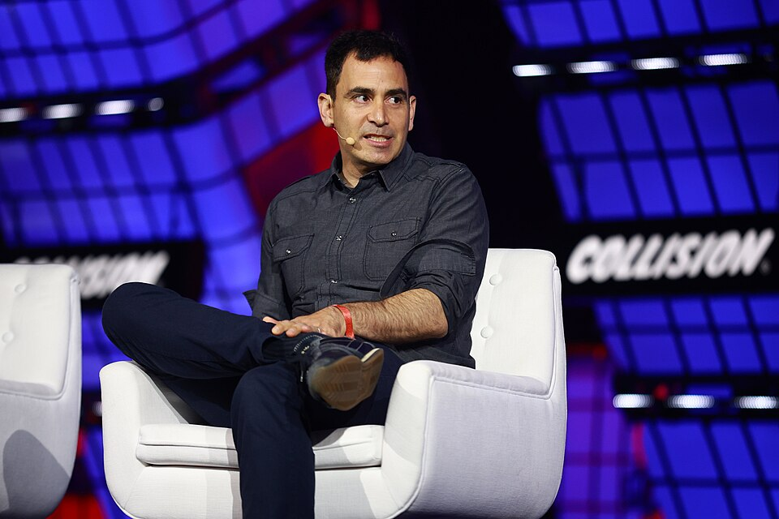

Surfers
AI 래퍼 SW
Surfers
목차
1. AI 래퍼란
Surfers
AI 래퍼란
Chapter 1
AI 래퍼(Wrapper)란?
“파운데이션 모델 위에 UI만 구현해서 만든 소프트웨어”를 뜻합니다.
Surfers
AI 래퍼란
AI 래퍼는
AI 모델을 직접 만들지 않고
파운데이션 모델의 API를 사용합니다.
Surfers
AI 래퍼란
AI 래퍼의 특징은
UI만 만드는 것이기 때문에
만들기 쉽다는 점입니다.
Surfers
AI 래퍼란
AI 래퍼 서비스의 예시
Cursor, 퍼플렉시티, Tiro 등이 대표적입니다.
Cursor
바이브 코딩 툴
퍼플렉시티
AI 검색 엔진
Tiro
AI 회의록 서비스
Surfers
AI 래퍼란
본질
제가 생각하는 AI 래퍼의 본질은,
이미 존재하던 유저 경험을
AI를 활용해 자동으로 제공해주는 것
Surfers
AI 래퍼란
참고 사례
Cursor와 X 자동번역
X의 자동 번역과 Cursor는 서로 다른 제품이지만, 이미 존재하던 유저 경험을 AI로 자동 제공한다는 점에서 같은 원리를 공유합니다.
𝕏
X 자동 번역
번역 버튼을 찾아 다른 도구로 이동하지 않아도, 읽던 흐름 안에서 번역을 바로 확인합니다.
Ambient AI · 알잘딱C
Cursor
에디터·코드베이스·실행 환경을 한곳에 묶고, 말 한마디로 수정과 실행까지 이어갑니다.
Ambient AI · GUI to CUISurfers
AI 래퍼란
성공 조건
성공적인 AI 래퍼의 세 가지 요소
Ambient AI
알잘딱
GUI to CUI
Surfers
AI 래퍼란
첫 번째 요소
Ambient AI
사용환경과 AI 서비스가 완전히 통합되어야 합니다. 사용자가 별도로 설정하거나 이동하지 않아도 서비스가 자동으로 적용되는 것이 핵심입니다.
사용환경과 AI 서비스의 완전한 통합
유저가 이미 머무는 화면과 흐름 안에 AI가 들어옵니다.
서비스의 자동 적용
별도 호출이나 설정 없이, 필요한 순간에 기본값처럼 작동합니다.
Surfers
AI 래퍼란
두 번째 요소
알잘딱
X 트위터리안들은 기존에도 ‘번역 보기’ 버튼으로 딸깍할 수 있었습니다. 그런데 그 딸깍조차 하기 싫어했습니다. 자동 번역을 제공받고 나서야 사람들이 놀란 이유입니다.
𝕏
기존 경험
‘번역 보기’ 버튼을 한 번 더 눌러야 했습니다.
딸깍도 마찰이다→
자동 번역
읽는 흐름 안에 번역이 바로 들어오자 사람들이 놀랐습니다.
알잘딱의 기준Surfers
AI 래퍼란
세 번째 요소
GUI to CUI
기능과 화면을 찾아 헤매던 경험 대신, 말 한마디로 끝낼 수 있어야 합니다.
G
GUI
기능·메뉴·화면을 찾아 이동하며 작업합니다.
찾아 헤매기C
CUI · Cursor
말 한마디로 의도 전달부터 수정·실행까지 이어집니다.
말 한마디로 끝내기Surfers
AI 래퍼란
한계
AI 래퍼는
가치가 있지만
해자가 없다
사용자에게 가치를 주는 것과 오래 방어할 수 있는 것은 다른 문제입니다. a16z 파트너 Bryan Kim은 소비자 AI의 현재를 “지금은 해자가 없다”고 진단했습니다.
가치는 생긴다
기존 경험을 더 쉽고 빠르게 제공하면 사용자는 분명한 효용을 느낍니다.
하지만 복제된다
모델·프롬프트·UI만으로 만든 기능은 모델 제공자와 경쟁자가 빠르게 따라옵니다.
해자는 뒤에서 만든다
고유 데이터·깊은 워크플로·유통과 신뢰를 쌓아야 방어력이 생깁니다.
다름아닌 빅테크
래퍼 서비스들의 가장 큰 위협입니다. OpenAI·Anthropic·Google은 모델 기능을 원천 제품에 흡수하고, 더 큰 유통·자본으로 차별화를 압박합니다.
Surfers
AI 래퍼란
한계 · 관점
해자가 없어도
기회는 사라지지 않는다
Elad Gil은 초기 AI·SaaS의 방어력이 약하더라도 고객의 필요를 잘 해결하는 일이 먼저라고 설명합니다. 방어력은 고객 가치 위에 시간이 지나며 쌓입니다.

사진: Collision Conf / Wikimedia Commons · CC BY 2.0
원문
“serving a customer need well is often more important (and harder) to think about than defensibility. In many cases defensibility emerges over time.”
번역
“고객의 필요를 잘 충족하는 일이 방어력 자체보다 더 중요하고, 생각하기도 더 어렵습니다. 많은 경우 방어력은 시간이 지나며 생깁니다.”
해자가 없다는 사실이 고객 가치나 사업 기회를 없애는 것은 아닙니다. 먼저 문제를 해결하고, 데이터·워크플로·유통을 쌓으며 해자를 만들어가면 됩니다.
투자·초기 투자 기업 · Airbnb · Stripe · Coinbase · Figma · Notion · Anduril · Deel · Instacart · Pinterest · OpenAI · Character · Harvey · Mistral · Perplexity · Pika
2. 바이브 코딩
Surfers
바이브 코딩
Chapter 2
바이브 코딩
[바이브 코딩이 만든 사용자 행동과, 그 위에 얹을 수 있는 기회를 적어주세요.]
사용자 변화
[누가 무엇을 더 쉽게 하게 되었는가]
새로운 불편
[기존 도구가 놓치는 문제]
기회 가설
[래퍼 SW가 해결할 수 있는 일]
3. 숙제 베끼기
Surfers
숙제 베끼기
Chapter 3
숙제 베끼기
[숙제 베끼기라는 장면에서 드러나는 사용자 의도와 사업 기회를 적어주세요.]
사용자 장면
[언제, 누가, 어떤 방식으로 쓰는가]
가치 제안
[단순 복사 이상으로 제공할 가치]
경계선
[신뢰·윤리·검증에서의 주의점]
4. 캐릭터 챗
Surfers
캐릭터 챗
Chapter 4
캐릭터 챗
[캐릭터 챗을 둘러싼 관계·몰입·반복 사용의 기회를 적어주세요.]
핵심 경험
[사용자가 계속 돌아오는 이유]
래퍼의 역할
[모델 위에 어떤 경험을 설계하는가]
확장 가능성
[다음 기능·고객·채널]
5. 사진 보정
Surfers
사진 보정
Chapter 5
사진 보정
[사진 보정에서 사용자가 실제로 사고 싶은 결과와 경험을 적어주세요.]
입력 장면
[사용자가 어떤 사진을 가져오는가]
결과물
[어떤 변화가 만족을 만드는가]
차별화
[범용 모델과 달라지는 이유]
6. 식단 관리
Surfers
식단 관리
Chapter 6
식단 관리
[식단 관리에서 기록·추천·실행을 연결하는 래퍼 기회를 적어주세요.]
반복 문제
[매일 반복되는 판단과 기록]
개인화
[사용자 맥락을 어떻게 반영하는가]
지속성
[꾸준히 쓰게 만드는 장치]
7. 노트테이킹
Surfers
노트테이킹
Chapter 7
노트 테이킹
[노트테이킹이 단순 기록을 넘어 어떤 다음 행동을 만들 수 있는지 적어주세요.]
기록
[무엇을 어떤 순간에 남기는가]
정리
[정보를 어떤 구조로 바꾸는가]
행동
[정리된 정보가 무엇을 움직이는가]
8. 브라우저
Surfers
브라우저
Chapter 8
브라우저
[브라우저라는 인터페이스 위에서 AI 래퍼가 바꿀 수 있는 행동을 적어주세요.]
현재 흐름
[사용자가 지금 오가는 화면과 도구]
개입 지점
[AI가 자연스럽게 끼어들 순간]
새 경험
[기존 웹을 어떻게 다시 묶는가]
9. 전문가 서비스
Surfers
전문가 서비스
Chapter 9
전문가 서비스
[전문가의 판단과 AI의 확장을 결합할 수 있는 사업 기회를 적어주세요.]
전문성
[사람이 반드시 가져야 할 판단]
확장
[AI가 줄이는 반복 업무]
신뢰
[고객이 지불하는 근거]
10. AI 애그리게이터
Surfers
AI 애그리게이터
Chapter 10
AI 애그리게이터
OpenRouter·Poe처럼 여러 LLM을 하나의 인터페이스나 API로 묶고, 요청을 모델 사이에 라우팅하는 사업입니다. Google의 Darren Mowry는 이 유형을 “AI aggregators”라고 부르며 “Stay out of the aggregator business.”라고 경고했습니다.
멀티 모델 접근
여러 모델을 한 계정·인터페이스·결제 흐름으로 묶어 비교와 전환을 쉽게 합니다.
API 라우팅
하나의 API로 요청을 받고, 품질·비용·안정성에 맞는 모델로 연결합니다.
중개만으로는 약하다
모델사가 직접 기능을 확장하면 단순 접근·결제·중개만으로는 마진과 해자를 지키기 어렵습니다.
11. 뜰 것 같은 분야들
Surfers
뜰 것 같은 분야들
Chapter 11
뜰 것 같은 분야들
기존 경험의 마지막 병목을 AI가 대신하는 곳에는 아직 새로운 기회가 남아 있습니다. 다음 두 영역은 ‘찾고, 판단하고, 이어서 실행하는’ 흐름을 한 번에 묶을 수 있습니다.
T
항공편/숙소 찾기 자동화
여행 조건을 던지면 후보·일정·동선을 이어서 만들고, 항공편 정보까지 자동으로 반영합니다. underduck의 Toki가 저장한 여행 콘텐츠를 최적 동선으로 바꾸는 사례입니다.
예시 · underduck TokiA
영업용 AI 솔루션
영업 통화 중 기술 질문이 나오면 문서·Slack·과거 콜에서 답을 찾아 실시간으로 제안하고, 다음 질문과 코칭까지 제공합니다.
예시 · Aside12. 미래와 제언
Surfers
미래와 제언
Chapter 12
미래와 제언
[앞으로의 기회와, 지금 시작할 때의 제언을 한 장에 정리해주세요.]
지금
[당장 검증할 가설]
다음
[확장할 고객·기능·채널]
제언
[발표를 듣는 사람에게 남길 행동]
Surfers
미래와 제언
Closing message
[래퍼 SW의
다음 기회]
[새로운 기회를 살펴본 뒤 남길 결론과 제언을 적어주세요.]
→[청중에게 요청할 다음 행동]
Surfers
미래와 제언
Thank you
감사합니다.
Q & A
[연락처, 링크, QR 코드 또는 마지막 안내]
01 / 39